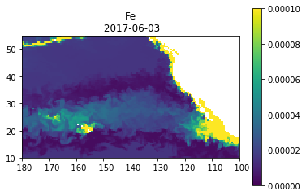
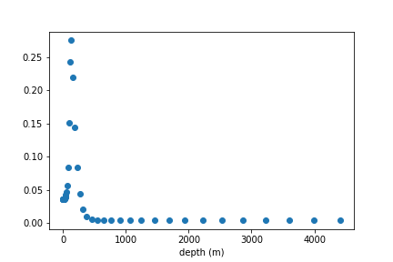

SQL Queries¶
Regional Map SQL¶
If you are familiar with SQL or T-SQL language, you can use “dbFetch()” function to execute any generic query and retrieve data. Below is a simple example showing how to retrieve a snapshot and plot a basic map.
"""Import the Libraries"""
from opedia import db
import numpy as np
import matplotlib.pyplot as plt
%matplotlib inline
"""Define the plot"""
def plot(dt, lat, lon, data):
plt.imshow(data, extent=[np.min(lon), np.max(lon), np.min(lat), np.max(lat)], origin='bottom', vmin=0, vmax=1e-4)
plt.title(field + '\n ' + dt1)
plt.colorbar()
plt.show()
"""Construct the query statement"""
def prepareQuery(args):
query = "SELECT [time], lat, lon, depth, %s FROM %s WHERE "
query = query + "[time] BETWEEN'%s' AND '%s' AND "
query = query + "lat BETWEEN %f AND %f AND "
query = query + "lon BETWEEN %f AND %f AND "
query = query + "depth BETWEEN %f AND %f "
query = query + "ORDER BY [time], lat, lon, depth "
query = query % args
return query
"""Retrieve regional data and plot"""
############## set parameters ################
table = 'tblPisces_NRT'
field = 'Fe' # Mole concentration of dissolved Iron
dt1 = '2017-06-03'
dt2 = '2017-06-03'
lat1, lat2, lon1, lon2 = 10, 55, -180, -100
depth1 = 0
depth2 = 1
##############################################
args = (field, table, dt1, dt2, lat1, lat2, lon1, lon2, depth1, depth2)
query = prepareQuery(args)
df = db.dbFetch(query)
lat = df.lat.unique()
lon = df.lon.unique()
shape = (len(lat), len(lon))
data = df[field].values.reshape(shape)
#df.to_csv(field+'.csv', index=False) # export data
plot(dt1, lat, lon, data)
Output
Time Series SQL¶
If you are familiar with SQL or T-SQL language, you can use “dbFetch()” function to execute any generic query and retrieve data. Below is a simple example showing how retrieve time series and plot.
"""Import the libraries"""
from opedia import db
import matplotlib.pyplot as plt
%matplotlib inline
"""Define the plot"""
def plot(t, y):
plt.plot(t, y, 'o')
plt.xlabel('time')
plt.show()
"""Construct the query statement"""
def prepareQuery(args):
query = "SELECT [time], AVG(lat) AS lat, AVG(lon) AS lon, AVG(%s) AS %s FROM %s WHERE "
query = query + "[time] BETWEEN'%s' AND '%s' AND "
query = query + "lat BETWEEN %f AND %f AND "
query = query + "lon BETWEEN %f AND %f "
query = query + "GROUP BY [time] "
query = query + "ORDER BY [time] "
query = query % args
return query
"""Retrieve time-series datcd a and plot"""
############## set parameters ################
table = 'tblsst_AVHRR_OI_NRT'
variable = 'sst'
dt1 = '2016-06-01'
dt2 = '2016-10-01'
lat1, lat2, lon1, lon2 = 23, 24, -160, -158
##############################################
args = (variable, variable, table, dt1, dt2, lat1, lat2, lon1, lon2)
query = prepareQuery(args)
df = db.dbFetch(query)
#df.to_csv(variable+'.csv', index=False) # export data
plot(df['time'], df[variable])
Output

Depth Profile SQL¶
If you are familiar with SQL or T-SQL language, you can use “dbFetch()” function to execute any generic query and retrieve data. Below is a simple example showing how to retrieve a depth profile and plot.
"""Import the libraries"""
from opedia import db
import matplotlib.pyplot as plt
%matplotlib inline
"""Define the plot"""
def plot(t, y):
plt.plot(t, y, 'o')
plt.xlabel('depth (m)')
plt.show()
"""Construct the query statement"""
def prepareQuery(args):
query = "SELECT AVG(lat) AS lat, AVG(lon) AS lon, depth, AVG(%s) AS %s FROM %s WHERE "
query = query + "[time] BETWEEN '%s' AND '%s' AND "
query = query + "lat BETWEEN %f AND %f AND "
query = query + "lon BETWEEN %f AND %f AND "
query = query + "depth BETWEEN %f AND %f "
query = query + "GROUP BY depth "
query = query + "ORDER BY depth "
query = query % args
return query
"""Retrieve regional data and plot"""
############## set parameters ################
table = 'tblPisces_NRT'
field = 'CHL'
dt1 = '2016-06-01'
dt2 = '2016-10-01'
lat1, lat2, lon1, lon2 = 23, 24, -160, -158
depth1, depth2 = 0, 5000
##############################################
args = (field, field, table, dt1, dt2, lat1, lat2, lon1, lon2, depth1, depth2)
query = prepareQuery(args)
df = db.dbFetch(query)
#df.to_csv(field+'.csv', index=False) # export data
plot(df['depth'], df[field])
Output
